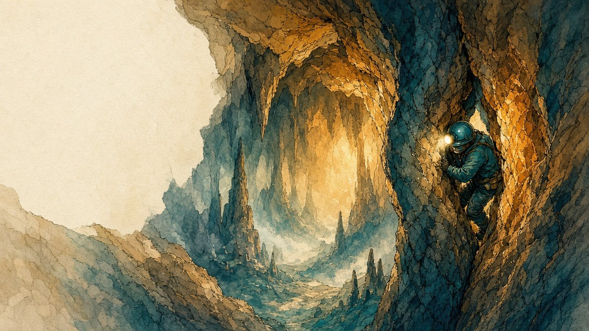
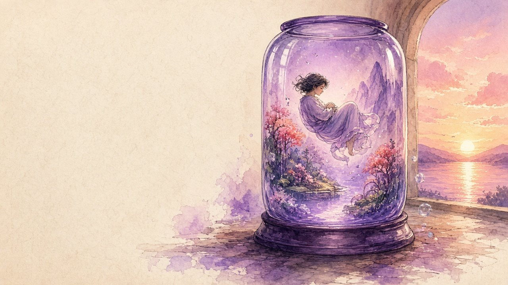
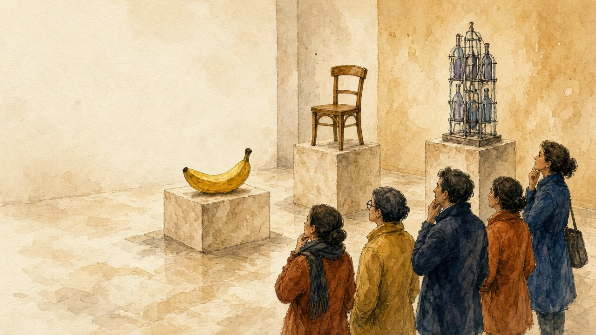
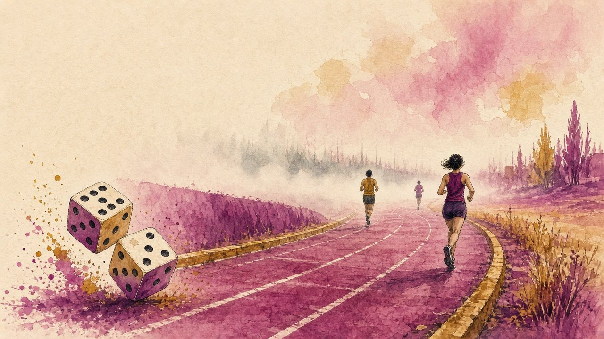

Seven questions that philosophers have argued about for centuries: why risk everything, what makes a thing the same, whether luck is fair. Argue them in English, with the grammar they need.
A climber risks her life for a view. A museum rebuilds a ship plank by plank. A machine offers a perfect, false life. Each of these is a thought experiment, a short story that makes a hard question impossible to ignore.
Each lesson starts from one of them. You meet the key words, read the ideas of the people who argued about it, learn one grammar structure that the argument needs, test your thinking on five cases, and then speak. The lessons stand alone, so start with the map or pick any card.
The map — click a circle to open its lesson
Each circle is a lesson. The small labels show the central idea, the thinkers, and the grammar point.
The lessons




Ten precise words, unlocked from context before you read.
Three short parts, each with a recall check and a question.
One structure the argument needs, with three exercises.
Five cases and a thought experiment to test the ideas on.
Timed tasks that bring the words, the ideas and the grammar together.